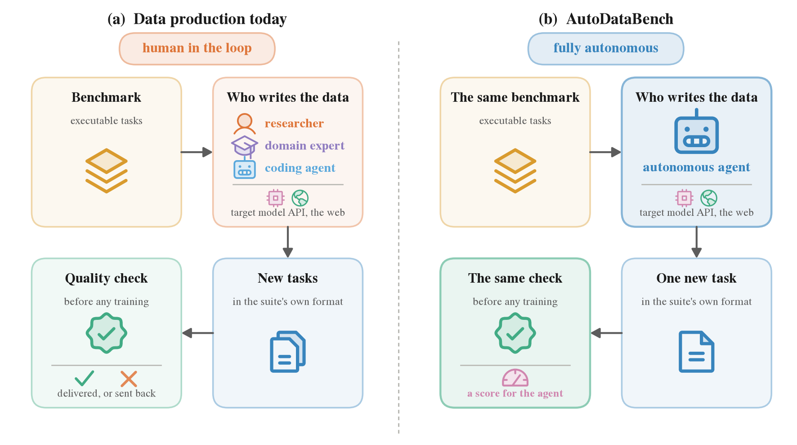
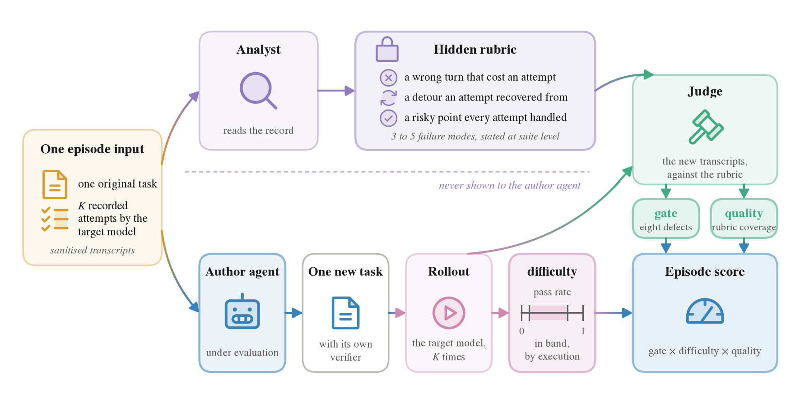
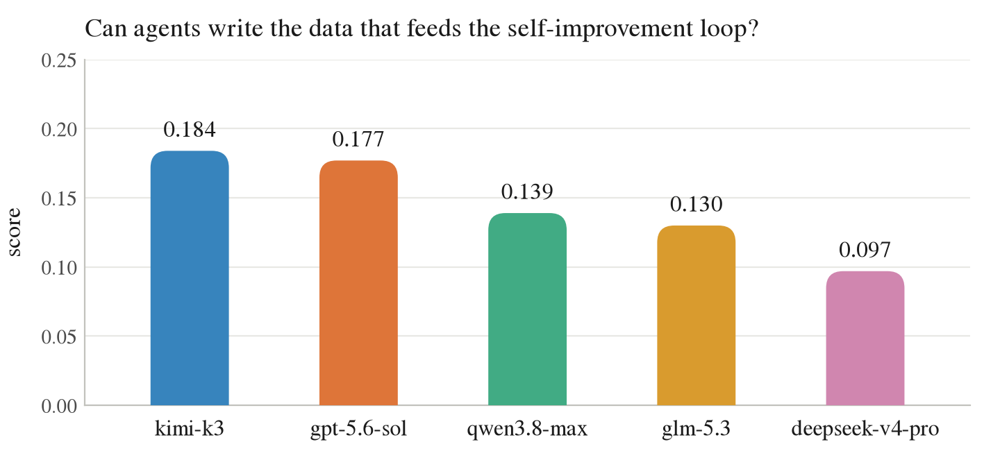

Most capability gains of the last few years came from data rather than architecture. What follows from that is a cost problem, because data is not compute. You cannot buy more of it by renting more GPUs. Someone has to make it, and for agentic reinforcement learning what they have to make is a task: an environment that executes, a verifier a wrong answer cannot pass, and a difficulty pitched at the model being trained.
过去几年的能力提升大多来自数据而非架构。随之而来的是成本问题：数据不是算力，多租 GPU 并不能 多产出一些。它需要有人制造。对 agentic RL 而言，要造的是一道任务，包含可执行的环境、错误答案无法通过的 验证器，以及与被训模型水平相称的难度。
Key takeaways
要点
- Building RL training tasks is expert work. Mercor passed $2B annualised revenue by June 2026, and over 75% of training-data spend goes to four vendors.
- We judge a synthesised task on the two things a training pipeline actually requires: a pass rate inside a usable band, and whether the data hits the pattern it was commissioned against.
- To keep the setting judgeable we removed quantity and cross-instance diversity. One original task in, one new task out.
- Across three benchmarks and five frontier agents, none scores above 0.184 out of 1.0.
- The bottleneck is calibration, not targeting. Pattern coverage runs 0.70 to 0.97, but only 14% to 25% of deliveries land at a usable difficulty.
- 造 RL 训练任务是专家工作。Mercor 年化收入于 2026 年 6 月突破 20 亿美元，训练数据支出的四分之三 以上流向四家供应商。
- 评判标准取自训练流水线的两项实际要求：通过率落在可用区间，以及数据命中订购时所针对的 pattern。
- 为使设定可评判，去掉数量与实例间多样性两个维度：一道原题进，一道新题出。
- 三个基准、五个前沿 agent，最高分 0.184（满分 1.0）。
- 瓶颈在校准而非瞄准：pattern 覆盖度 0.70 至 0.97，落在可用难度上的交付仅 14% 至 25%。
The work being automated is already half automated
这项待自动化的工作本身已经半自动化
It helps to be accurate about who does this job today, because the answer is not "humans, by hand." A domain expert working alongside a coding assistant produces far more than either alone, and much of the volume now comes from researchers who learn a domain well enough to build a pipeline that generates instances, then supervise what it emits. The human is in the loop, setting the standard and catching what the pipeline gets wrong, rather than typing every task.
先厘清这项工作目前由谁完成。答案并非纯人工撰写。领域专家与编码助手协作，产出远高于两者单独 工作；当下相当一部分产量来自另一种方式：研究员把某个领域研究透，搭出可生成实例的流水线，再审查其产出。 人留在循环中设定标准、拦截错误，不必逐条撰写。
That tells you where the remaining cost sits, and it is not typing speed. Four things carry it. Someone has to supply the judgement of what a correct artifact looks like, which is the part a pipeline cannot supply for itself. Someone has to build the pipeline and keep it robust and efficient enough to be worth running. When a new domain arrives, someone has to turn it around quickly, and the pipeline built for the last one rarely transfers. All of that is staffed the whole way through, so the bill scales with headcount rather than with tokens.
剩余成本的位置由此确定，它不在撰写速度上。承担成本的有四项：「一个正确的产物应当是什么样」这项 判断需要有人给出，流水线无法自行提供；管线本身需要有人搭建，并维持到稳健高效、值得运行的程度；新场景到来 时需要有人快速交付，而为上一个场景搭的管线很少能直接迁移；以上每一环都要全程配人。账单因此随人数增长，而 非随 token 增长。
A market has grown around exactly that bundle of work. Mercor reported $614 million in revenue for the first half of 2026 and passed $2 billion annualised by June, with 91% of it coming from foundation model companies. Surge AI reported $1.2 billion in 2024 with 110 employees. Scale AI was tracking $2 billion before Meta bought 49% of it. Over three quarters of the money in training data and RL environments goes to four vendors, and the frontier of what they sell has moved from labels to interactive sandboxes that mimic real software. Mercor acquired a company that rebuilds Excel, Salesforce and Zendesk as environments.
市场正是围绕这一整套工作形成。Mercor 2026 年上半年收入 6.14 亿美元，6 月年化突破 20 亿，其中 91% 来自 基座模型公司；Surge AI 2024 年收入 12 亿美元，员工 110 人；Scale AI 在 Meta 收购其 49% 股份前年化同样 接近 20 亿。这块支出的四分之三以上流向四家供应商。其所售内容的前沿已从标注转向模拟真实软件的可交互沙盒， Mercor 收购了一家把 Excel、Salesforce、Zendesk 重建为环境的公司。
So the question is not whether to remove the human. It is how much further the automation can go. Two years ago the base models were not good enough to ask. They are now, so we asked: can an agent close the loop and produce the artifact, judgement included?
所以问题不在于是否移除人力，在于自动化能推进到何种程度。两年前基座模型还撑不起这个问题，如今 可以了。我们要问的是：agent 能否闭合这个循环，连同其中的判断一起，把产物造出来？
A good task has to pass two tests
一道好题要过两关
We take the standard from what the training process and the data industry already demand, which comes down to two things.
我们的标准取自训练过程和数据产业本来就在要求的东西，归结为两条。
The pass rate has to land inside a band. The model being trained should solve the task sometimes, neither never nor always. A task it always solves teaches it nothing. A task it never solves produces no gradient to learn from. Every pipeline discards both, and nobody argues about this one.
通过率需落在区间内。被训模型应当偶尔解出该题，既非从未解出，也非次次解出。次次 解出无法提供新信息，从未解出给不出可学的梯度。两端都会被流水线剔除，这一条没有争议。
The data has to hit the pattern it was ordered against. Nobody commissions training data in the abstract. It is commissioned against a weakness: the model keeps mishandling a particular kind of decision, and you want tasks that put it back at that decision. A task at the right difficulty that exercises something else is not what was ordered.
数据需命中订购时所针对的 pattern。训练数据从不被抽象地订购，订单总是针对具体弱点： 模型在某一类决策上反复失手，需要的是能将它重新置于该决策点的任务。难度合适却考了别的内容，交付的就不是 订单上那份数据。
We stripped the setting down to make it judgeable
我们精简了设定，使其可被评判
Real data production happens in bulk, which is not a clean thing to build a benchmark around. A vendor delivers thousands of instances, and much of what makes the batch good is the diversity across it, since the instances should not all be one thing wearing different hats. Judge a batch and you are judging quantity, coverage and variety at once, with no way to say which part your number came from.
真实的数据生产以批量进行，以此构建 benchmark 并不简洁。供应商交付上千条实例，质量很大程度上 取决于实例间的多样性，它们不应是同一内容的不同外观。评判一批数据时，数量、覆盖、多样性被同时计入，最终 无法辨明分数来自哪一部分。
So we removed both on purpose. Take an existing benchmark, and for each task in it ask for exactly one new task. No quantity target, so nothing rewards volume. One delivery per original, so there is no batch for diversity to be a property of. What remains is a single artifact, judged on its own, against a standard fixed before it existed.
所以我们有意移除这两项。选定一个现成基准，对其中每道题只要求产出一道新题。不设数量目标，没有 机制奖励产量；每道原题只对应一份交付，不存在能承载多样性的「一批」。剩下一个单独的产物，依据它出现 之前即已确定的标准被单独评判。

How one episode is scored
一个 episode 的评分过程
The agent receives one original task, a record of the target model attempting it six times, and the rest of the benchmark read-only so it can pick up the conventions. It writes one new task and hands it over. Two things then happen to that task.
agent 拿到一道原题、被训模型在该题上六次尝试的完整记录，以及基准的其余部分（只读，供其熟悉格式 惯例）。它写出一道新题交付。随后该题会经历两件事。
The target model attempts it six times under the delivered task's own verifier, which settles the pass rate by execution rather than by opinion. Separately, a judge checks the pattern against a list of failure modes an analyst wrote from the original task's transcripts. The agent never sees that list. The judge reads the new task's transcripts rather than the task text, and has to cite an attempt, a step and a verbatim quote before it can record a mode as exercised.
被训模型在交付题自带的验证器下运行六次，通过率由此得出，不取决于任何人的意见。另一侧，裁判对照 失败模式清单核查 pattern。该清单由分析员从原题转录中写成，agent 自始至终看不到。裁判读的是新题产生的转录 而非题面；要判定某个模式被考到，必须指出第几次尝试、第几步，并引用原话。

We ran this on three benchmarks of eight tasks each, chosen to cover different kinds of work: Terminal-Bench for terminal and software engineering, TB-Science for scientific computing, and AutomationBench for business workflow automation driven through APIs. Five frontier agents did the writing. The target model stayed the same throughout, so the scores compare.
我们在三个基准上运行该流程，每个取八道题，覆盖三类性质不同的工作：Terminal-Bench 对应终端与 软件工程，TB-Science 对应科学计算，AutomationBench 对应通过 API 驱动的业务流程自动化。造题方为五个前沿 agent，被训模型自始至终保持同一个，分数之间可比。
At a 45-minute budget per task, no agent scores above 0.2
在单次任务 45min 预算下，没有 agent 得分超过 0.2
The more useful finding is which of the two tests they fail. I expected the pattern to be the hard one, since reading a behavioural record and building something aimed at a specific weakness is the part that looks like it needs judgement. That is not where they fail. Coverage runs 0.70 to 0.97, so a delivery that survives really does provoke the behaviour it was built to provoke.
更有价值的发现在于它们失守于哪一项。我原以为困难的是 pattern：读一份行为记录，再构造出针对具体 弱点的任务，看上去才是需要判断力的部分。结果并非如此。覆盖度落在 0.70 至 0.97，留存下来的交付确实引出了它 被设计来引出的行为。
They fail on the pass rate. Four in five deliveries are discarded there before the pattern is examined at all, and they miss at both ends: the delivered task tends to be solved on every attempt or on none.
它们失守于通过率。五份交付中四份在这一项即被淘汰，尚未进入 pattern 评判，且两端都未命中：交付的 任务往往要么次次被解出，要么一次都解不出。

Calibration is hard because it cannot be reasoned out
校准的困难在于它无法通过推理得出
There is a structural reason, and the setup is built to expose it. The cheapest way to land a task at the right difficulty is to stay close to the original: keep the shape, swap the names and the numbers, and it will almost certainly land in band, because it is the original. That shortcut is the one thing the check has to refuse, and the line it draws is whether someone who solved the original would still have anything left to work out.
这里存在一个结构性原因，这套设定正是为暴露它而建。把难度放到正确位置，代价最低的做法是贴近原题 构造：形状不变，替换名称与数字，它几乎必然落入区间，因为它就是原题。这条捷径正是检查必须拒绝的对象，判据 在于：解过原题的人面对新题，是否仍有需要重新想清楚的地方。
One agent is that tension in a single row. deepseek-v4-pro has the highest in-band rate of anything we tested and the lowest final score, because most of those deliveries turn out to be the original with its surface swapped. Its pattern coverage on what survives is 0.931, so the problem was never aim.
这一矛盾在其中一个 agent 上表现得最集中。deepseek-v4-pro 落带率为我们测过的最高值，最终分数却最低， 其交付大多是原题的表层替换。留存下来那几条的 pattern 覆盖度为 0.931，可见问题始终不在瞄准。
The honest way to calibrate is expensive. You are guessing how a model will behave on a task that does not exist yet, and the only way to check is to build it and run it, which costs budget the agent would rather spend writing. Aim can be reasoned about from a transcript. Difficulty has to be measured.
认真做校准的代价很高：需要预判模型在一道尚不存在的任务上如何表现，唯一的验证方式是构造出来运行 一遍，这会消耗 agent 更愿投入写作的预算。瞄准可以从转录中推理得出，难度只能测量得出。
Conclusion
结论
At a 45-minute budget per task, none of the five agents delivers well enough to be worth using: the best score is 0.184 out of 1.0. The ranking also does not survive a change of domain. kimi-k3 places first on AutomationBench and fourth on Terminal-Bench, and qwen3.8-max scores zero on the first and first on the second.
在单任务 45 分钟的预算下，五个 agent 都没有做出足够好的交付，最高分为 0.184，满分 1.0。排序也 无法跨领域成立：kimi-k3 在 AutomationBench 上第一，在 Terminal-Bench 上第四；qwen3.8-max 在前者零分， 在后者第一。
It is worth saying what the finished version of this would look like. An agent that can place difficulty, and that can tell in advance which of its own drafts are worth running, turns data production into something that scales with compute rather than with headcount. The data for a model's next round of training becomes something the model can produce for itself. Our numbers give that day an early measure.
值得说清楚这件事做成之后的样子。一个能放置难度、并能预判自己哪些草稿值得一跑的 agent，会把数据 生产变成随算力扩展而非随人数扩展的事情。模型下一轮训练所需的数据，可以由模型自己写出来。我们的数字为 这一天的到来提供了一个早期度量。